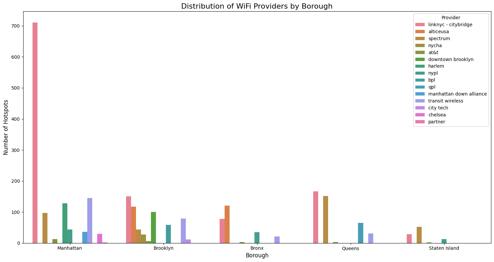
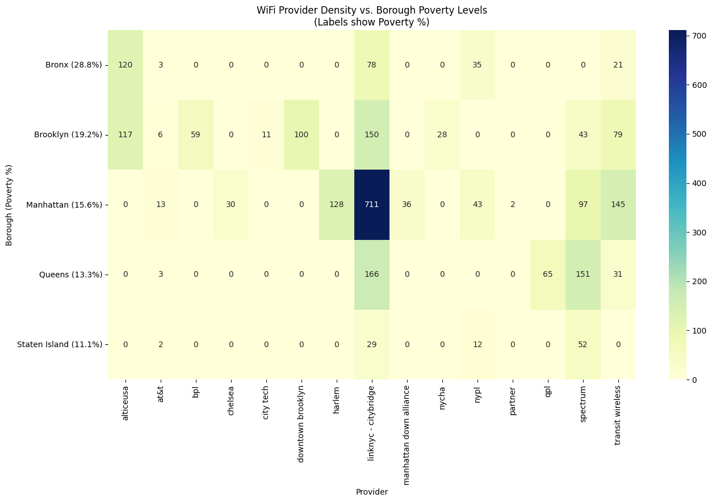
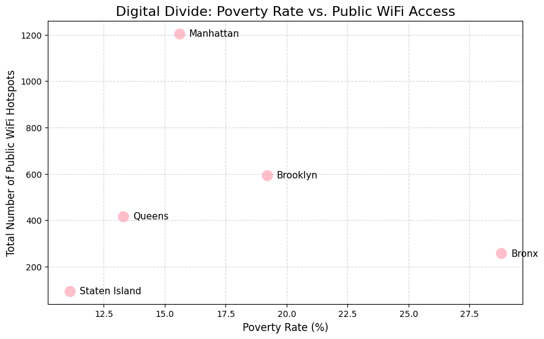

In the modern world, high-speed internet is a foundational necessity. From education to games to simple searches, the internet offers all kinds of opportunities. However, for many, such a tool is limited due to an existing digital divide.
The relationship between poverty and technology creates a cycle of exclusion. When residents cannot afford private high-speed internet, they are forced to rely on public infrastructure. In a city like New York, the distribution of free public WiFi serves as a critical indicator of equity. By cross-referencing NYC public WiFi locations with Census poverty data, I am mapping the distribution of public against the neighborhood poverty to analyze whether digital access is reaching disadvantaged individuals or remaining to only account to high-income areas.
I believe that awareness is the first step toward action. By visualizing these systemic barriers, I hope to show my community and future policymakers that where a person lives should not determine their level of opportunity. I am doing this project to ensure that this gap can no longer be ignored, creating a foundation of evidence so that in the future, we can collectively build a city where digital infrastructure is distributed with equity and intention.

Looking at this graph, the relationship between location and access becomes clear: the digital divide mapped out across NYC's boroughs. When we compare these numbers to poverty rates, with the Bronx having the highest rate at 28.8% and Manhattan a much lower 15.6%, the data displays inequity. Manhattan has an abundant amount of hotspots, particularly from private providers like LinkNYC (CityBridge), which accounts for over 700 locations in that borough alone. Meanwhile, the Bronx and Staten Island sit at the bottom of the scale with significantly fewer resources. This visual highlights a systemic issue: free WiFi is being heavily concentrated in wealthy, commercial areas rather than in the high-poverty neighborhoods where residents rely on public infrastructure most for education and opportunity. It proves that simply having public WiFi isn't enough if the distribution ignores the communities that need it to survive in a digital world.

The relationship between neighborhood poverty and the distribution of free public WiFi in New York City is visualized in this heatmap, which highlights a massive imbalance in infrastructure. Despite having the lowest poverty rate among the boroughs shown (15.6%), Manhattan is an outlier with an ample amount of resources, specifically the 711 LinkNYC - Citybridge hotspots within the area. In contrast, the Bronx, which faces the highest poverty rate at 28.8%, has as little as 78 LinkNYC hotspots. This data illustrates that digital resources are not being distributed based on community need; instead, they are clustered in wealthier, commercial hubs. While lower-income residents often rely more heavily on public infrastructure for essential tasks like education and job hunting, the map shows that the digital divide is reality.

Based on the scatter plot, it is clear that neighborhoods with the highest poverty rates actually have significantly less access to public WiFi compared to areas with lower poverty rates. If digital infrastructure were distributed equitably based on community need, we would expect to see a positive correlation, meaning the borough with the highest poverty rate would have the most public hotspots to support residents who cannot afford private internet. Instead, the graph reveals the opposite reality. The Bronx, which faces the city's highest poverty rate at 28.8%, sits near the bottom of the chart with only 257 public hotspots. Meanwhile, Manhattan, with a much lower poverty rate of 15.6%,completely dominates the data with an overwhelming 1,205 hotspots. By showing the Bronx and Manhattan on opposite extremes, the scatter plot visually proves that public WiFi infrastructure is heavily concentrated in wealthier, commercial centers rather than being implemented where it is urgently needed most, fundamentally driving the digital divide.